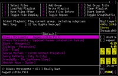

AudioPlayer
Um Audiodaten auf dem PC anhören zu können, benötigt man neben den sog. Codecs (für komprimierte Formate) eine geeignete Abspiel-Software – den sogenannten "Player". Dieser stellt die Grundfunktionen wie "Start/Wiedergabe", "Pause", "Stop" usw. zur Verfügung. Die Daten werden dann über die Soundkarte als Audiosignal über Lautsprecher, Kopfhörer oder die Stereoanlage ausgegeben.
Aufgrund der Fülle an Formaten, den verschiedenen Anwendungszwecken und aus designtechnischen Gründen sind im Laufe der Zeit eine Vielzahl verschiedener Player entstanden. Grundsätzlich lassen sich diese in drei Kategorien einteilen:
Audio-Player mit integrierten Verwaltungsfunktionen, welche die Musik auf dem eigenen Rechner lokal mittels einer Datenbank katalogisieren: Liste
Audio-Player, die nur zum Abspielen von Dateien oder Internetradio geeignet sind und auf eine Datenbank verzichten. Diese Programme sind insbesondere dann interessant, wenn die Musiksammlung nicht lokal gespeichert ist und/oder eine möglichst niedrige Systemauslastung gewünscht bzw. notwendig ist: Liste
Kombinierte Audio- und Video-Player – diese Kategorie ist nicht Bestandteil dieses Artikels, sondern wird unter VideoPlayer behandelt.
Diese Seite soll einen Überblick geben, welche verschiedenen Programme es gibt und was diese auszeichnet. Die meisten Programme verfügen über eigene Artikel. Weitere Informationen findet man unter dem in der ersten Spalte angegebenen Link. Die Fähigkeit eines Players zur Verwendung mit Internetradio ist in der Spalte "Internetdienste" aufgeführt. Einsteigern wird grundsätzlich ein Programm aus den offiziellen Paketquellen empfohlen.
Player mit grafischer Oberfläche¶
Mit Datenbank¶
| Player mit Datenbank | |||
| Name | Internetdienste | Aussehen - Visualisierung | Merkmale |
| Amarok | Internetradio, Jamendo, Last.fm scrobbeln, Podcasts | Visualisierungen | MP3-Player-Unterstützung, Playlisten |
| Banshee | Internetradio, Last.fm scrobbeln, Podcasts | Alben-Cover | MP3-Player-Unterstützung, Playlisten, Plugins |
| Clementine | Internetradio, Last.fm scrobbeln, Spotify, Magnatune, Jamendo | Abspaltung von Amarok 1.4, Audiovisualisierung via projectM, Anzeige von Lyrics und Biografien | Dynamische Playlisten, MP3-Player-Unterstützung, Equalizer, Cue-Sheet-Unterstützung |
| Exaile | Internetradio, Podcasts, Last.fm scrobbeln | Songtexte | Automatische Erkennung von CDs und Mediaplayern, Playlisten in Tabs |
| Gmusicbrowser | Last.fm scrobbeln | Ansichten selbst erstellen, Verschiedene Ansichten | Equalizer, Alben-Cover, Playlisten, hervorragender Tag-Editor (mehrere Genre-Tags) |
| Guayadeque | Internetradio, Jamendo, Last.fm scrobbeln, Magnatune, Podcasts | Sehr einfach anpassbares Layout mit Panelen und Tabs | Coverbrowser, Playlisten, Tag-Editor, VU Meter, Multiple Datenbanken; Entwicklung eingestellt, ab 16.04 nicht mehr in den offiziellen Quellen |
| JuK | Last.fm scrobbeln | Einfache, aufgeräumte Bedienoberfläche | Sammlungslisten, Warteschlange, Metadatenverwaltung, CDs brennen (über K3b), Titelbilder |
| Lollypop | Internetradio | Party-Vollbildschirm | Vielseitige Playlisten, Cover-Anzeige, Künstlerinfos, MTP-Synchronisation |
| Musique (früher Minitunes) | Last.fm scrobbeln | Party-Vollbildschirm | Einfache Playlisten, Infoseite zu Cover, Künstler und Songtext |
| Nightingale | über Erweiterungen | Erweiterungen, Skins | Nachfolger von Songbird |
| Pragha | Last.fm scrobbeln | Unterstützt mehrere Ansichten | Equalizer, Alben-Cover, Playlisten, Tag-Editor |
| Quod Libet | Internetradio, Last.fm scrobbeln, Libre.fm, Musicbrainz, Podcasts | Alben-, Browser- und Dateiansicht | Addons, Autorating, Playlisten, Queueing, Regex-Suche, ReplayGain, Tag-Editor |
| Rhythmbox | Internetradio, last.fm scrobbeln, libre.fm, Podcasts | Visualisierungen | Brennoptionen, MP3-Player-Unterstützung, Playlisten |
 Sayonara Sayonara | Internetradio, Last.fm scrobbeln, Podcasts, SoundCloud | Verschiedene Oszillogramme (Pegelanzeigen), Spektrogramm | Playlisten, ReplayGain, Equalizer, Tag-Editor, Crossfader, Gapless Playback |
| Tomahawk | über Erweiterungen | Wikipedia, Songtexte, Alben | Streaming von Internetdiensten über Resolver, Socialaudio via Twitter, Jabber u.v.a.m. |
| Yarock | Internetradio, Last.fm scrobbeln | Wikipedia, Songtexte, Alben | Playlisten, ReplayGain |
Ohne Datenbank¶
| Player ohne Datenbank | |||
| Name | Internetdienste | Aussehen - Visualisierung | Merkmale |
| AlsaPlayer | Internetradio | Oszilloskop | Playlisten, Wiedergabegeschwindigkeit lässt sich von -400% bis +400% einstellen |
| Audacious | Internetradio, Last.fm scrobblen | Skins, Audiovisualisierung via projectM | Equalizer, Playlisten, Tray-Icon, generell hoher Funktionsumfang |
| Aqualung | Internetradio, CDDB-Datenbankabfrage, Podcasts | Skins | Jack-Unterstützung, LADSPA-Plugins, MP3-Player-Unterstützung, Playlisten |
| Bluemindo | - | - | Minimalistischer Player |
| DeaDBeeF | Internetradio, Last.fm scrobblen | Alben-Cover | Playlisten in Tabs, Plugins, Professioneller 18-Band-Equalizer (unterstützt foobar2000-Presets), Tag-Editor, Tray-Icon, Gapless Playback |
| Decibel Audio Player | Last.fm scrobbeln | Alben-Cover | Playlisten |
| KsCD | CDDB-Datenbankabfrage | Verschiedene Designs | Reiner CD-Player |
| LXMusic | - | - | Minimalistischer Player der Desktop-Umgebung LXDE |
| Mixxx | - | Skins | DJ Audioplayer mit Mix-Möglichkeit, BPM Synchronisation, Pitching etc. |
| Pogo | - | - | minimalistischer Player mit Equalizer, Cover-Anzeige |
| qmmp | Internetradio, Last.fm scrobbeln, Libre.fm | Skins, Audiovisualisierung via projectM, Spektrum | Equalizer, Playlisten, Tag-Editor |
Player für Internetdienste¶
| Player für Internetdienste | |||
| Name | Internetdienste | Merkmale | Aufnahme |
| Atraci | YouTube | Verhält sich wie ein normaler Musikplayer, wenn das Video nur ein Standbild enthält. Ansonsten mit Videowiedergabe wie bei Minitube. | nein |
| Gradio | Community Radio Browser  | reiner Player für Internetradio | nein |
| JMyOggRadioPlayer | - | Java-basierender Player für das nichtkommerzielle Projekt MyOggRadio  | ja |
| KRadio | - | Player für Internetradio und klassische AM/FM Radiokarten | ja |
| MPD | MPD Server | Audioplayer / -client speziell für den MPD Streaming Server | nein |
| Musictube | YouTube | Verhält sich wie ein normaler Musikplayer (ähnliches Design wie Musique, gleicher Autor) | nein |
| Nuvola Player | u.a. Amazon Cloud Player, Deezer, Google Play, Rdio | Integration in den Desktop durch Multimediatasten, Sound-Indikator, uvm. | nein |
| Radio Tray | - | reiner Player für Internetradio | nein |
| Great Little Radio Player | - | reiner Player für Internetradio | nein |
| Spotify Client | Spotify | Software für das kommerzielle Musikportal | nein |
| Vagalume | Libre.fm | Fernsteuerung, Scrobblen zu libre.fm, Lesezeichen, Tray-Icon | Herunterladen der libre.fm-Songs |
Player für die Kommandozeile¶
Auch für die Kommandozeile bzw. das Terminal gibt es zahlreiche Abspielprogramme. Konkret wären das:
|  |
| mp3blaster |
aplay und
paplay- Wiedergabeprogramme von ALSA bzw. PulseAudioalsaplayer-text - Textversion des AlsaPlayers
cmus - mit ncurses-Oberfläche, in den offiziellen Paketquellen enthalten
nvlc, cvlc, rvlc - Kommandozeilenvarianten von VLC
mcdp - minimalistischer CD-Player
mp3blaster
- beherrscht MP3 und OGG Vorbis, in den offiziellen Paketquellen enthaltenmpg123 bzw. mpg321 (nur MP3)
Bashtuner
- Skript speziell zum Abspielen von Internetradio (Diskussion im Forum)
Siehe auch Shell/Anwendungen.
Player mit speziellen Eigenschaften¶
Audio Overload¶
Audio Overload ist speziell zum Abspielen exotischer Audioformate ("Chiptunes") älterer Spielkonsolen und Computersystemen gedacht.
Ambient Noise¶
Ambient Noise (ANoise) von Marcos Alvarez Costales ist ein AudioPlayer der besonderen Art: Statt Musik wird in einer Endlosschleife z.B. Vogelgezwitscher, Meeresrauschen, Grillenzirpen oder Regenwetter abgespielt. Darüber hinaus können problemlos eigene Lieblingsgeräusche wiedergegeben werden – sofern diese in digitaler Form vorliegen.
PlayItSlowly¶
PlayItSlowly ist ein kleines Python-Programm, mit dem Aufnahmen in anderen Geschwindigkeiten (Tempi) abgespielt werden können. Dabei kann die Tonhöhe gehalten oder auch verändert werden. Ebenso lässt sich ein Ausschnitt aus der Aufnahme wiedergeben. Nützlich vor allem für Musiker, die genau hören wollen, wie die Cracks spielen, Journalisten oder alle, die Transkripte erstellen müssen. Kann aber auch als "Party-Gag" genutzt werden.
Auch mit dem AlsaPlayer ist es möglich, die Wiedergabegeschwindigkeit zu erhöhen oder zu verringern.
Links¶
Intern¶
Multimedia
 Übersichtsseite
ÜbersichtsseiteInternetradio
Informationen sowohl für Hörer wie auch für RadiomacherMusik verwalten
Musikserver in einem NetzwerkMixer - Mixer, Mischpulte, Equalizer und Effekt-Racks
Extern¶
audio4linux
- Linux Audio Forumlinuxaudio.org
- Ausführliche Seite rund um Audio für LinuxDie besten Player für Linux
- Beschreibungen der AudioPlayer Guayadeque, DeaDBeeF, Google Music Manager, Gejengel und Aqualung (06/2007)Top 10 Ubuntu-Linux Audio-Player
- Auflistung vieler bekannter Audio-Player für UbuntuXiX Music Player
- Neuentwicklung in Lazarusauf Java basierende plattformübergreifende Audioplayer:
- Erstellt mit Inyoka
-
 2004 – 2017 ubuntuusers.de • Einige Rechte vorbehalten
2004 – 2017 ubuntuusers.de • Einige Rechte vorbehalten
Lizenz • Kontakt • Datenschutz • Impressum • Serverstatus -
Serverhousing gespendet von